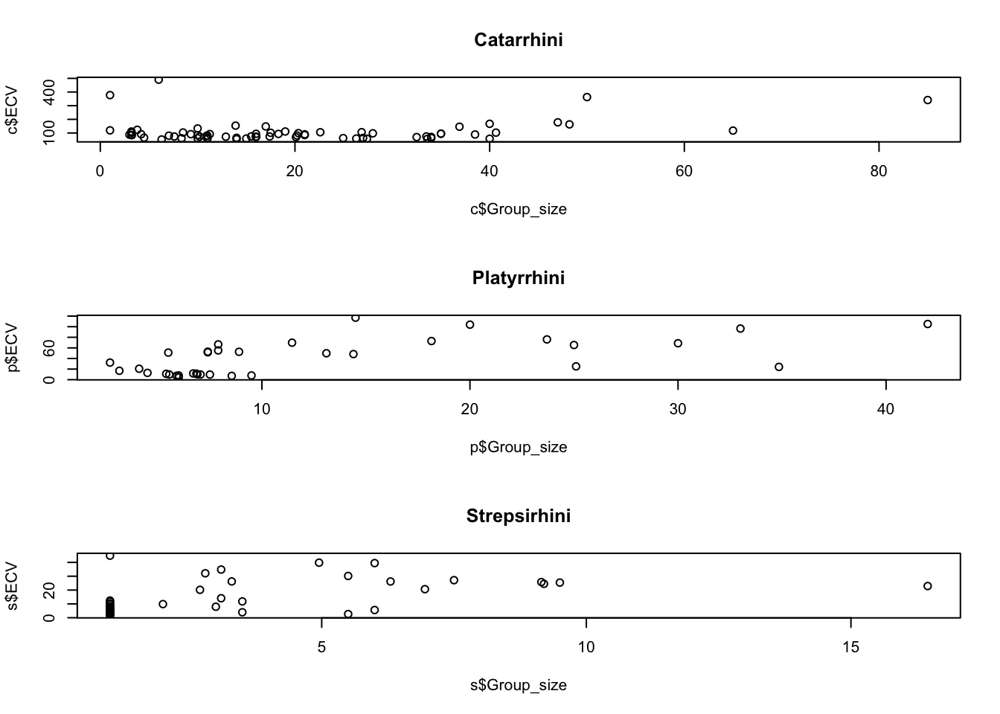

Using the {tidyverse} read_csv() function, load the “Street_et_al_2017.csv” dataset from this URL as a “tibble” named d.
Do a quick exploratory data analysis where you generate the five-number summary (median, minimum and maximum and 1st and 3rd quartile values), plus mean and standard deviation, for each quantitative variable.
library(tidyverse)
Warning: package 'purrr' was built under R version 4.3.3
Warning: package 'lubridate' was built under R version 4.3.3
── Attaching core tidyverse packages ──────────────────────── tidyverse 2.0.0 ──
✔ dplyr 1.1.4 ✔ readr 2.1.5
✔ forcats 1.0.0 ✔ stringr 1.5.1
✔ ggplot2 3.5.1 ✔ tibble 3.2.1
✔ lubridate 1.9.4 ✔ tidyr 1.3.1
✔ purrr 1.0.4
── Conflicts ────────────────────────────────────────── tidyverse_conflicts() ──
✖ dplyr::filter() masks stats::filter()
✖ dplyr::lag() masks stats::lag()
ℹ Use the conflicted package (<http://conflicted.r-lib.org/>) to force all conflicts to become errors
library(mosaic)
Registered S3 method overwritten by 'mosaic':
method from
fortify.SpatialPolygonsDataFrame ggplot2
The 'mosaic' package masks several functions from core packages in order to add
additional features. The original behavior of these functions should not be affected by this.
Attaching package: 'mosaic'
The following object is masked from 'package:Matrix':
mean
The following objects are masked from 'package:dplyr':
count, do, tally
The following object is masked from 'package:purrr':
cross
The following object is masked from 'package:ggplot2':
stat
The following objects are masked from 'package:stats':
binom.test, cor, cor.test, cov, fivenum, IQR, median, prop.test,
quantile, sd, t.test, var
The following objects are masked from 'package:base':
max, mean, min, prod, range, sample, sum
library(skimr)
Attaching package: 'skimr'
The following object is masked from 'package:mosaic':
n_missing
Rows: 301 Columns: 13
── Column specification ────────────────────────────────────────────────────────
Delimiter: ","
chr (2): Species, Taxonomic_group
dbl (11): Social_learning, Research_effort, ECV, Group_size, Gestation, Wean...
ℹ Use `spec()` to retrieve the full column specification for this data.
ℹ Specify the column types or set `show_col_types = FALSE` to quiet this message.
From this dataset, plot brain size (ECV) as a function of social group size (Group_size), longevity (Longevity), juvenile period length (Weaning), and reproductive lifespan (Repro_lifespan).
Repeat the analysis above for three different major radiations of primates - “catarrhines”, “platyrrhines”, and “strepsirhines”) separately. These are stored in the variable Taxonomic_group. Do your regression coefficients differ among groups? How might you determine this?
library(broom)
Warning: package 'broom' was built under R version 4.3.3
c <- d |>filter(Taxonomic_group =="Catarrhini")p <- d |>filter(Taxonomic_group =="Platyrrhini")s <- d |>filter(Taxonomic_group =="Strepsirhini")par(mfrow=c(3,1))plot(y=c$ECV,x=c$Group_size,main="Catarrhini")plot(y=p$ECV,x=p$Group_size, main="Platyrrhini")plot(y=s$ECV,x=s$Group_size, main="Strepsirhini")

m_catr<-lm(formula = ECV ~ Group_size, data =c)m_plat<-lm(formula = ECV ~ Group_size, data =p)m_strep<-lm(formula = ECV ~ Group_size, data =s)broom::tidy(m_catr)
Yes, regression coefficients are different in groups. Catarrhinies have highest intercept value, meaning that when x=0, the brain size is 80. Large brain size considerable to other groups. While the slope is lowest, showing that by group size increase the brain size increase only slowly within that group.
While Strepsirrhinies have lowest intercept value [small brain size] and slope value is also low.
Plattyrrhines show increase of brain size by group size.
In all together, there is clear rapid change of the value of brain size with the group the size increase. [high slope value]
Step 6
For your first regression of ECV on social group size, calculate the standard error for the slope coefficient, the 95% CI, and the p value associated with this coefficient by hand. Also extract this same information from the results of running the lm() function.
Use a permutation approach with 1000 permutations to generate a null sampling distribution for the slope coefficient. What is it that you need to permute? What is the p value associated with your original slope coefficient? You can use either the quantile method (i.e., using quantiles from the actual permutation-based null sampling distribution) or a theory-based method (i.e., using the standard deviation of the permutation-based null sampling distribution as the estimate of the standard error, along with a normal or t distribution), or both, to calculate this p value.